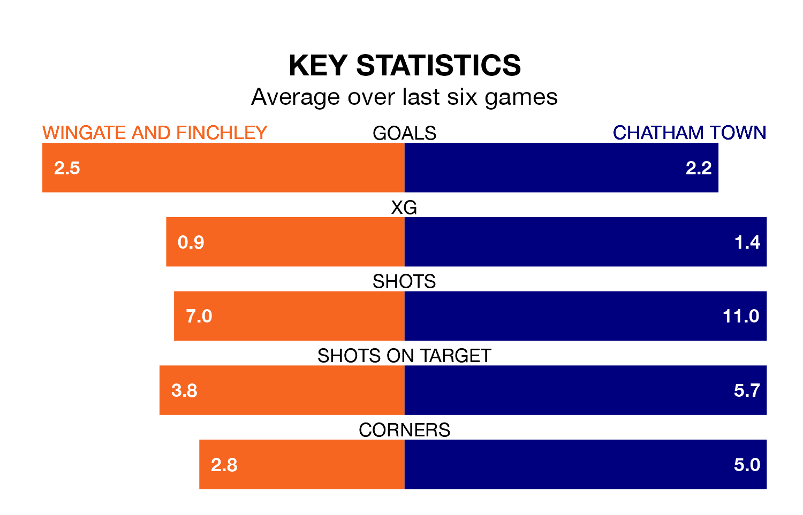

Saturday's match between Wingate and Finchley and Chatham Town promises to be one for the neutrals, as two of Isthmian Premier Division's most free-scoring sides go head-to-head.
Ahead of the game at the Harry Abrahams Stadium, the Blues and Chatham sit joint-second in the goal-scoring charts, with 48 goals apiece.
Chatham are second in the table after 25 games, of which they have won 15 and drawn four, earning 49 points.
Wingate & Finchley are three places behind Town in fifth, with 14 wins and two draws putting them on 44 points.
The Blues are in good form in Isthmian Premier Division, with four wins and a draw from their last six games.
And also with four wins and a draw over that period, the away side's form is identical – they have both taken 13 points from 18.
Wingate & Finchley's last match was on January 13, a 5-1 win against Whitehawk.
Chatham beat Cheshunt 3-2 last time out, also on January 13.
Updated: 06:13 (UTC), 18/01/24